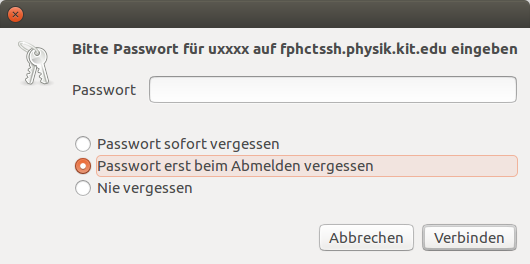

Falls du dich mit SSH schon auskennst und nur auf der Suche nach der Adresse vom Physik-Poolraum bist, möchte ich dich nicht weiter auf dieser Webseite festhalten. Hier, bitteschön:
fphctssh.physik.kit.edu
Was ist SSH?
Bei SSH handelt es sich um ein Netzwerkprotokoll mit dessen Hilfe man eine verschlüsselte Verbindung zu einem entfernten Gerät herstellen kann. Gleichzeitig ist SSH auch der Name des Programms mit dem die SSH Verbindung hergestellt wird. Mithilfe von SSH kann nun eine Sitzung in der Linux-Shell auf einem der Poolraum-Rechner bedient werden ohne dafür im Poolraum sein zu müssen. Dazu wird eine SSH Verbindung zum Physik-Poolraum aufgebaut. Wie das funktioniert wird in den untenstenenden Abschnitten ⬇ für jedes Betriebssystem erklärt.
Weiterhin kann man SSH auch verwenden um Dateien zwischen dem Poolraum und einem eigenen PC auszutauschen. Dazu wird das bei SSH häufig mitgelieferte Programm SCP verwenden. Auch hierfür wurden Anleitungen für unterschiedliche Betriebssysteme verfasst.
Zugang unter Windows 10
Bei Windows 10 wird ein SSH Client mitgeliefert. Deshalb muss nichts weiter getan werden als die Eingabeaufforderung oder PowerShell oder das neue Windows Terminal zu öffnen (das Windows Terminal wird im Vergleich zu den zwei Alternativen empfohlen, da es Unicode-Unterstützung mit sich bringt und auch Emojis anzeigen kann, wozu die anderen zwei Programme nicht fähig sind). Alle Programme lassen sich über die Suchfunktion im Startmenü finden. Dort angekommen, muss zum Herstellen einer SSH Verbindung folgender Befehl eingegeben werden, mit dem Zusatz, dass anstelle von uxxxx der Benutzername des zugehörigen Poolraum-Accounts verwendet wird:
ssh uxxxx@fphctssh.physik.kit.edu
Nach Eingabe des Oben ⬆ stehenden Befehls und des Passworts (Passwort wird nach dem Herstellen einer Verbindung abgefragt) ist man im Terminal-Fenster via SSH mit einem Poolraum-Rechner verbunden. Bei der allerersten SSH Sitzung mit einem Server muss die Akzeptanz des Schlüssels des Servers durch eine Eingabe von yes bestätigt werden. Beendet wird die SSH Sitzung mit einer Eingabe des Wortes exit.
Dateiübertragung mittels SCP
Mit dem Programm SCP können Dateien zwischen dem Poolraum und dem eigenen Rechner kopiert werden. Im Folgenden ist ein Beispiel zu sehen bei dem Benutzer uxxxx die Datei Testda.tei zu seinem Poolraum-Account kopiert, sodass diese dort in seinem Download-Ordner gespeichert wird:
Dabei sei anzumerken, dass es sich bei . um das aktuelle Verzeichnis handelt in dem sich das Terminal zum Zeitpunkt des Aufrufs von SCP befindet. Das Verzeichnis wird in der PowerShell durch den Aufruf von pwd und in der Eingabeaufforderung durch den Aufruf von cd ausgegeben.
Um mit SCP nicht nur einzelne Dateien sondern auch ganze Verzeichnisse zu übertragen, muss scp mit der Option -r aufgerufen werden. Die oben ⬆ genannten Beispiele sehen dann identisch aus, bis auf den Unterschied, dass scp durch scp -r ersetzt wird und anstatt Dateien Verzeichnisse angegeben werden.
Dateiübertragung mittels WinSCP
Weiterhin lässt sich die Dateiübertragung auch grafisch über das Programm WinSCP erledigen. Dieses lässt sich über den folgenden Link herunterladen.
Nach der installation und dem Starten ist das Programmfenster von WinSCP zu sehen. In dem oben ⬆ sichtbaren Bild wurden schon die notwendigen Login-Daten eingetragen (gelb hinterlegt). Diese lauten:
Server: fphctssh.physik.kit.edu
Benutzername: uxxxx
Passwort: **********
Port: 22
In dem Programm sind nun zwei Dateimanager zu sehen: die linke Spalte zeigt die Dateien auf dem eigenen Computer an und die Rechte Spalte die Dateien die auf dem Poolraum-Account hinterlegt sind. Dateien oder Ordner können darin ausgewählt und zwischen beide Rechnern hin und her kopiert werden.
Zugang unter Windows 8 / 7
Bei Windows 8 oder Windows 7 wird leider kein SSH Client mitgeliefert. Dieser muss nun nachinstalliert werden. Hierfür eignet sich das Programm PuTTY (Das ist natürlich nur eine Empfehlung des Verfassers dieser Anleitung. Man kann auch jeden beliebigen anderen SSH Client verwenden). Das Programm PuTTY kann man unter den folgenden Links für 32-Bit und 64-Bit Rechner herunterladen. Wer nicht weiß, ob er einen 32- oder 64-Bit Rechner hat, probiert zuerst einfach mal die 64-Bit version aus und danach die 32-Bit Version, falls es nicht funktioniert hat.
Nach der Installation öffnet sich ein Fenster das wiefolgt aussieht:
Dies ist das Startfenster von PuTTY. In dem Bild wurde unter Host Name (or IP address) schon die Adresse des Physik-Poolraums eingetragen (gelb hinterlegt). Diese lautet:
fphctssh.physik.kit.edu
Durch einen klick auf Open wird eine SSH Sitzung gestartet. Beim ersten Starten einer solchen Sitzung kommt es vor, dass folgende Warnmeldung erscheint:
Diese Warmeldung besagt, dass bisher noch kein Schlüsselaustausch mit dem Server stattgefunden hat, der garantiert, dass der Schlüssel auch wirklich vom Server ist. Diese Warnmeldung warnt vor einer möglichen Man in the middle Attacke warnen. Da ein solches Szenario aber unwahrscheinlich ist und außerdem die SSH Verbindung in Zukunft häufiger verwendet wird, empfiehlt es sich, auf Ja zu klicken. Dies führt dazu, dass der Schlüssel des Servers auf dem PC hinterlegt wird um vor zukünftigen Man in the middle Attacken vorzubeugen. PuTTY öffnen nun ein Terminal in dem die SSH Sitzung läuft. Beendet wird die SSH Sitzung mit einer Eingabe des Wortes exit.
Dateiübertragung mittels WinSCP
Mit dem Programm WinSCP wird eine grafische Möglichkeit angeboten um Dateien zwischen dem eigenen PC und dem Physik-Pool auszutauschen. Die Installation und Verwendung von WinSCP wird im Abschnitt zu Windows 10 erklärt.
Zugang unter Macintosh
Bei Mac-OS wird ein SSH Client mitgeliefert. Deshalb muss nichts weiter getan werden als das Programm Terminal zu öffnen. Dort angekommen, muss zum Herstellen einer SSH Verbindung folgender Befehl eingegeben werden, mit dem Zusatz, dass anstelle von uxxxx der Benutzername des zugehörigen Poolraum-Accounts verwendet wird:
ssh uxxxx@fphctssh.physik.kit.edu
Nach Eingabe des Oben ⬆ stehenden Befehls und des Passworts (Passwort wird nach dem Herstellen einer Verbindung abgefragt) ist man im Terminal-Fenster via SSH mit einem Poolraum-Rechner verbunden. Bei der allerersten SSH Sitzung mit einem Server muss die Akzeptanz des Schlüssels des Servers durch eine Eingabe von yes bestätigt werden. Beendet wird die SSH Sitzung mit einer Eingabe des Wortes exit.
Dateiübertragung mittels SCP
Mit dem Programm SCP können Dateien zwischen dem Poolraum und dem eigenen Rechner kopiert werden. Im Folgenden ist ein Beispiel zu sehen bei dem Benutzer uxxxx die Datei Testda.tei zu seinem Poolraum-Account kopiert, sodass diese dort in seinem Download-Ordner gespeichert wird:
Dabei sei anzumerken, dass es sich bei . um das aktuelle Verzeichnis handelt in dem sich das Terminal zum Zeitpunkt des Aufrufs von SCP befindet. Das Verzeichnis wird in der PowerShell durch den Aufruf von pwd und in der Eingabeaufforderung durch den Aufruf von cd ausgegeben.
Um mit SCP nicht nur einzelne Dateien sondern auch ganze Verzeichnisse zu übertragen, muss scp mit der Option -r aufgerufen werden. Die oben ⬆ genannten Beispiele sehen dann identisch aus, bis auf den Unterschied, dass scp durch scp -r ersetzt wird und anstatt Dateien Verzeichnisse angegeben werden.
Einbindung über den Finder
Der Finder in Mac OS X unterstützt die Einbindung des Physik-Poolraums als Datenträger. Dazu stellt er die Option Mit Server verbinden bereit. Hier kann nun die Adresse des Servers eingetragen werden, mit dem Zusatz, dass anstelle von uxxxx der Benutzername des zugehörigen Poolraum-Accounts verwendet wird. Die Adresse sieht folgendermaßen aus:
sftp://uxxxx@fphctssh.physik.kit.edu
Die nachfolgenden Bilder zeigen den Menüpunkt, das Eingabefenster und den Dialog zur Passwort-Abfrage. Die einzugebenden Login-Daten wurden im zweiten Bild gelb hinterlegt.
Zugang unter Linux
Bei den meisten Linux-Distributionen ist der SSH Client schon installiert. Aus diesem Grund kann man auch direkt mit der Verwendung von SSH starten. Dazu muss zuerst ein Terminal geöffnet werden. Wer das Terminal noch nicht kennt: Das Terminal ist ein Eingabefenster, häufig mit dunklem Hintergrund und einem rechteckigen weißen cursor der zu Beginn oben links blinkt. Solche Terminals sind häufig in Hacker-Filmen zu sehen. Das Öffnen eines Terminals läuft bei jeder Linux-Distribution ein wenig anders ab. Beinahe immer gibt es im Anwendungsmenü (Windows-Nutzer nennen es "Startmenü") ein Programm namens Terminal oder mit den Buchstaben "term" im Namen. Ab und zu funktioniert auch die Tastenkombination STRG + ALT + T.
In diesem Terminal wird nun die SSH Verbindung zu einem der Computer im Poolraum aufgebaut. Dazu muss der nachfolgende Befehl in das Terminal eingegeben werden, mit dem Zusatz, dass anstelle von uxxxx der Benutzername des zugehörigen Poolraum-Accounts verwendet wird:
ssh uxxxx@fphctssh.physik.kit.edu
Nach Eingabe des Oben ⬆ stehenden Befehls und des Passworts (Passwort wird nach dem Herstellen einer Verbindung abgefragt) ist man im Terminal-Fenster via SSH mit einem Poolraum-Rechner verbunden. Bei der allerersten SSH Sitzung mit einem Server muss die Akzeptanz des Schlüssels des Servers durch eine Eingabe von yes bestätigt werden. Beendet wird die SSH Sitzung mit einer Eingabe des Wortes exit.
Dateiübertragung mittels SCP
Mit SSH können auch Dateien zwischen dem eigenen PC und dem Physik-Poolraum übertragen werden. Dazu kann das mitgelieferte Programm SCP verwendet werden. SCP wird genau so wie SSH über ein Terminal bedient. Dabei kann SCP in 2 Modi betrieben werden: Eine Datei wird vom Poolraum abgeholt und auf dem PC gespeichert oder eine Datei, die auf dem PC gespeichert ist, wird zum Poolraum kopiert.
Zu beiden Verfahren sei anzumerken, dass man den Poolraum-Rechner folgendermaßen anspricht, um mitzuteilen welche Datei abgeholt oder wo diese Datei gespeichert werden soll:
uxxxx@fphctssh.physik.kit.edu:<Speicherort>
Im Folgenden ist ein Beispiel zu sehen bei dem Benutzer uxxxx die Datei Testda.tei zu seinem Poolraum-Account kopiert, sodass diese dort in seinem Download-Ordner gespeichert wird:
Dabei sei anzumerken, dass es sich bei . um das aktuelle Verzeichnis handelt in dem sich das Terminal zum Zeitpunkt des Aufrufs von SCP befindet. Das Verzeichnis wird im Terminal durch den Aufruf von pwd ausgegeben.
Um mit SCP nicht nur einzelne Dateien sondern auch ganze Verzeichnisse zu übertragen, muss scp mit der Option -r aufgerufen werden. Die oben ⬆ genannten Beispiele sehen dann identisch aus, bis auf den Unterschied, dass scp durch scp -r ersetzt wird und anstatt Dateien Verzeichnisse angegeben werden.
Einbindung über den Dateimanager
Unter Linux gibt es Dateimanager die die Einbindung des Physik-Poolraums in den Dateimanager unterstützen. Dazu bietet der Dateimanager häufig einen Option namens Mit Server verbinden oder ähnlich an. Hier kann nun die Adresse des Servers eingetragen werden, mit dem Zusatz, dass anstelle von uxxxx der Benutzername des zugehörigen Poolraum-Accounts verwendet wird. Die Adresse sieht folgendermaßen aus:
sftp://uxxxx@fphctssh.physik.kit.edu/
Die nachfolgenden Bilder zeigen das Eingabefenster und den Dialog zur Passwort-Abfrage unter dem Dateimanager Nautilus, der bei der Linux-Distribution Ubuntu mitgeliefert wird. Die einzugebenden Login-Daten wurden im ersten Bild gelb hinterlegt.

Dateiübertragung mittels FileZilla
Weiterhin lässt sich die Dateiübertragung auch grafisch über das Programm FileZilla erledigen. Dieses lässt sich häufig über den mitgelieferten Paketmanager installieren. Die Installation lässt sich auch über die Kommandozeile erledigen und läuft wiefolgt ab:
Nachdem FileZilla installiert und gestartet wurde sollte folgendes Programmfenster zu sehen sein (eventuell auch im Dark-Mode, je nach Linux Distribution):
Dies ist das Programmfenster von FileZilla. In dem Bild wurden schon die notwendigen Login-Daten eingetragen (gelb hinterlegt). Diese lauten:
Server: fphctssh.physik.kit.edu
Benutzername: uxxxx
Passwort: **********
Port: 22
Nach Eingeben der obenstehenden ⬆ Daten beginnt FileZilla damit, eine SFTP Verbindung zum Physik-Poolraum herzustellen. Bei der ersten Anmeldung kommt es vor, dass folgende Warnmeldung angezeigt wird:
Diese Warnmeldung besagt, dass bisher noch kein Schlüssel von diesem Server gespeichert wurde. Da die Verbindung zum Datenaustausch vorraussichtlich häufiger verwendet wird, empfiehlt es sich, diesen Schlüssel zu speichern.
In dem Programm FileZilla sind nun zwei Dateimanager zu sehen: die linke Spalte zeigt die Dateien auf dem eigenen Computer an und die Rechte Spalte die Dateien die auf dem Poolraum-Account hinterlegt sind. Dateien oder Ordner können darin ausgewählt und zwischen beide Rechnern hin und her kopiert werden.
Problembehandlung
Passwort zu oft falsch eingegeben
Bei einem Verbindungsversuch besteht drei mal die Möglichkeit, das Passwort einzugeben. Wurde das Password auch beim dritten mal nicht korrekt eingegeben so bleibt diesem Rechner der Zugang zum Poolraum verwehrt. Ein erneuter Anmeldeversuch ist erst nach 24h möglich.
Nach Anmeldungen auf anderen Poolraum-Rechnern scannen
Manche Programme können nur in einer Sitzung auf einem Rechner gleichzeitig laufen. Dazu gehört z.B. der Firefox-Browser, der das Benutzerprofil auf der laufenden Sitzung sperrt wodurch in einer weiteren Sitzung dieses Programm nicht mehr verwendet werden kann. Falls eine Sitzung auf einem der Poolraum-PCs aktiv sein sollte aber vergessen wurde, auf welchem Rechner diese Sitzung läuft, kann über einen Aufruf von
$ where_am_i_logged_in.py
aus der Kommandozeile ermittelt werden, auf welchem Poolraum-Rechner noch eine grafische Sitzung für den aktuell verwendeten Benutzer läuft (Hinweis: Hierbei handelt es sich um ein Skript, welches über die Pfad-Variable von überall aus aufgerufen werden kann). Das Programm verwendet SSH um die PCs nach einer laufenden Sitzung abzufragen. Damit das Skript sich ohne Passwort-Eingabe mit den PCs verbinden kann, muss auf den Poolraum-Rechnern der Login über den SSH-Schlüssel aktiviert werden. Mehr Informationen dazu sind weiter unten im Abschnitt "Anmeldung ohne Passwort-Eingabe" zu finden bzw. kann dazu auch auf den Poolraum-Rechnern der Befehl $ enable_ssh_key_pool.sh zur automatischen Einrichtung ausgeführt werden.
Drucken via Fernzugriff
Nachdem eine Datei mittels SCP zu dem Benutzerkonto im Physik-Poolraum kopiert wurde, kann diese nach dem Aufbau einer SSH Verbindung über die Kommandozeile ausgedruckt werden. Der Befehl dazu lautet:
lp -d <Drucker> <Datei>
Für den Parameter Drucker stehen folgende Geräte zur Auswahl:
lp1
lp2
lpcol
Zur Verständnis wird hier noch einmal ein Beispiel aufgeführt bei dem aus dem Drucker lp1 (neben der Eingangstür) eine Datei ausgedruckt wird:
lp -d lp1 /pfad/zur/Datei.pdf
Was ist ein SSH Schlüssel?
Eine SSH Verbindung findet nur verschlüsselt statt. Wenn dies nicht der Fall wäre, könnten die Netzwerk-Packete zwischen den zwei mit SSH kommunizierenden Rechnern mitgehört und der darin übertragene Inhalt ohne jegliche Schwierigkeit ausgelesen werden. Da sich darin Passwörter oder der Inhalt von Benutzer-Dateien befinden, die der Privatsphäre des Benutzers unterliegen, ist es wichtig, dass die Verbindung verschlüsselt wird.
SSH verwendet eine Asymmetrische Verschlüsselung, bei der der Schlüssel aus einem privaten Schlüssel (private key) und einem öffentlichen Schlüssel (public key) besteht. Mit dem öffentlichen Schlüssel können Daten nur verschlüsselt werden aber nicht entschlüsselt. Erst mit dem privaten Schlüssel ist es möglich, die verschlüsselten Daten wieder zu entschlüsseln. Der öffentliche Schlüssel kann also bedenkenlos veröffentlicht werden während der private Schlüssel vom Besitzer nicht weitergegeben werden darf.
Da es zum jedem öffentlichen Schlüssel genau einen einzigen zugehörigen privaten Schlüssel gibt, kann man diesen auch verwenden, um sich bei einem anderen Rechner zu authentifizieren: Anstelle der Eingabe eines Passworts kann stattdessen beim Aufbauen der Verbindung überprüft werden, ob eine mit einem vorher weitergereichten öffentlichen Schlüssel verschlüsselte Nachricht auf der anderen Seite entschlüsselt werden kann. Im Vergleich zur Eingabe eines Passworts ist dies eine einfachere und sicherere Methode um sich auf einem entfernten Rechner anzumelden.
ssh Schlüssel erzeugen
Für das Erzeugen eines SSH Schlüssels liefert das Programm-Packet SSH das Programm ssh-keygen mit. Über den folgenden Aufruf kann ein neues SSH-Schlüsselpaar erzeugt werden:
Nach dem Aufruf wird abgefragt, wo der Schlüssel gespeichert werden soll und ob dieser Schlüssel mit einem Passwort geschützt werden soll. Wenn sattdessen nichts eingegeben wird und einfach mit der Enter-Taste bestätigt wird, werden die Default-Werte verwendet: Kein Passwort und ~/.ssh/id_rsa als Speicherort für den privaten Schlüssel sowie ~/.ssh/id_rsa.pub für den öffentlichen Schlüssel. Dabei ist das Tilde-Symbol ~ ein Synonym für das Home-Verzeichnis des Benutzers, unter Linux und Mac über selbiges Zeichen (z.B. cd ~) erreichbar und unter Windows in c:\Users\... . Dieses Symbol wird auf der ganzen Webseite einheitlich als Speicherort für das Home-Verzeichnis verwendet, ebenso wie der Schrägstrich als Verzeichnis-Trenner (anstelle des Backslash unter Windows).
Die im Beispiel verwendeten Parameter erfüllen folgende Funktionen:
-t rsa: Verwende RSA als Verschlüsselungs-Verfahren, das t stehe hier für „Type“. Anstelle von RSA kann auch ein ED25519 Schlüssel verwendet werden (siehe weiter unten ↓)
-b 4096: Gibt die Länge des Schlüssels an, in diesem Fall 4096 Bits. Der Mindestwert liegt bei 1024 Bits.
-C uxxxx@student.kit.edu: Dies stellt einen Kommentar dar. Der Kommentar hat keinen Einfluss auf die Funktionen des Schlüssels aber dafür den Vorteil, dass man mehrere Schlüssel über den darin mitgegebenen Kommentar einfacher voneinander unterscheiden kann. In diesem Fall wurde eine E-Mail Adresse als Kommentar angegeben.
RSA oder ED25519 Schlüssel?
RSA hat sich in der Vergangenheit als gängiges Verschlüsselungs-Verfahren durchgesetzt. Mittlerweile gibt es neuere Verschlüsselungs-Verfahren, wie z.B. ED25519, welche mehr Performance und eine höhere Sicherheit anbieten. Mehr Informationen dazu sind in der Gitlab-Dokumentation zu finden.
Bei der Verwendung eines ED25519 Schlüssels wird der Schlüssel in den Dateien ~/.ssh/id_ed25519.pub und ~/.ssh/id_ed25519 gespeichert. Dementsprechend ist darauf zu achten, dass bei der Ausführung einer der Beispiele auf dieser Webseite der Pfad zum Schlüssel auch richtig verwendet wird.
Anmeldung ohne Passwort-Eingabe
Ein SSH Schlüssel-Paar kann auch verwendet werden, um sich zu identifizieren, da der private Schlüssel nur dem Besitzer bekannt sein sollte. Dazu können auf entfernten Rechnern public-keys hinterlegt werden. Wenn nun eine SSH Verbindung von einem Benutzer aufgebaut wird, dann wird beim Verbindungsaufbau geprüft, ob dieser Benutzer den privaten Schlüssel zu einem der hinterlegten öffentlichen Schlüssel besitzt und falls dass der Fall ist, wird die Passwort-Abfrage übersprungen.
Die Datei, in der die öffentlichen Schlüssel zum passwortlosen Login auf dem entfernten Rechner gespeichert werden, ist: ~/.ssh/authorized_keys. Um den passwortlosen Login einzurichten, muss der öffentliche Schlüssel (Inhalt von ~/.ssh/id_rsa.pub in diese Datei kopiert werden. In dieser Datei können auch mehrere public keys für diverse Schlüsselpaare hinterlegt sein, allen wird der passwortlose Zugang ermöglicht.
Ein wichtiges Detail sind die Lese-Berechtigungen für diese Datei. Diese können unter Linux über einen Aufruf von ls -l ~/.ssh/authorized_keys ausgelesen werden und befinden sich in der ersten Spalte der Ausgabe. Wichtig ist, dass diese wie folgt aussehen: -rw-r--r--. Wenn die Datei nicht gelesen werden kann (das r fehlt) oder die Datei von anderen Benutzern beschrieben werden kann (mehr als ein w vorhanden), verweigert SSH die Nutzung dieser Datei. Über einen Aufruf von chmod 644 ~/.ssh/authorized_keys können die Berechtigungen auf einen zulässigen Wert gesetzt werden.
Unter den Poolraum-Rechnern untereinander kann der passwortlose Login über einen Aufruf des Befehlt $ enable_ssh_key_pool.sh automatisch eingerichtet werden. Das aufgerufene Programm erstellt automatisch ein Schlüsselpaar und hinterlegt den öffentlichen Schlüssel in der authorized keys Datei.
Die SSH Konfigurations-Datei
In der Datei ~/.ssh/config können auf dem Host-Rechner ein paar Verbindungen konfiguriert werden. z.B. kann ein Eintrag für die Verbindung zu Poolraum gesetzt werden, in dem der Benutzername, die Adresse des Poolraum-Rechners und vielleicht noch ein paar weitere Optionen definiert werden. Dieser Eintrag bekommt einen Namen. Wenn nun diese Verbindung aufgebaut werden soll, kann anstelle eines Aufrufs von
ssh user@remote_pc --additional-arguments
die bequeme Variante verwendet werden:
ssh <name_der_verbindung>
Die folgende Datei ist eine fertige Konfiguration mit der der standard SSH Zugang über den Aufruf ssh physik-pool erfolgt bzw. der Zugang zu einem bestimmten Rechner über den Aufruf von ssh physik-pool<01..35> aufgebaut werden kann.
Um diese Konfiguration richtig zu verwenden, muss die Datei heruntergeladen und in den Ordner ~/.ssh/ abgelegt werden. Innerhalb dieser Datei muss noch der Benutzername in Zeile 2 auf das richtige U-Kürzel gesetzt werden. Zu guter Letzt fehlt noch der Eintrag in der Datei ~/.ssh/config, der die zusätzliche Konfigurations-Datei aktiviert. Dazu muss die folgende Zeile hinzugefügt werden:
Include physpool.conf
Cluster-Nutzung der Poolraum-Rechner
Die Poolraum-Rechner können, solange die Anwendung den Nutzungsregeln entspricht, als Verbund genutzt werden um aufwendige Arbeiten schneller auszuführen. Dabei wird zwischen High-Throughput und High-Performance Anwendungen unterschieden. Für beiden Anwendungsfälle existieren unterschiedliche Lösungen.
PISA - High Throughput
"Pseudo Infrastructure for Scaleable Applications" (PISA) ist ein Batch-System für den Computer-Poolraum. In Fällen, für die ein Programm mehrfach aber mit veränderten Eingaben ausgeführt werden muss, werden alle Variationen der Eingaben an PISA übergeben und die einzelnen Aufgaben (Jobs) auf die Rechner verteilt. PISA parallelisiert die Ausführung der Aufgaben, was nur dann funktioniert, wenn alle Jobs unabhängig voneinander laufen können.
Weitere Informationen über die Benutzung sowie ein Beispiel-Programm sind in der Dokumentation von PISA zu finden.